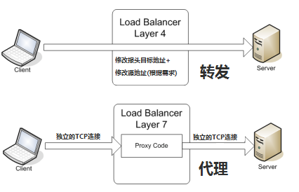
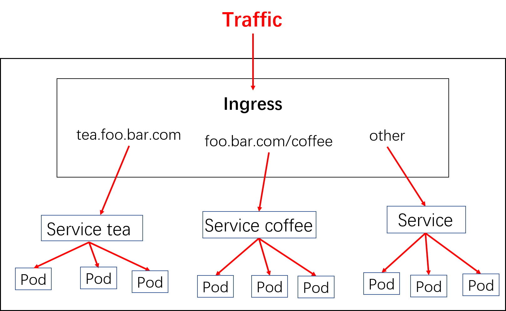

k8s 对外服务之ingress
本文首先回顾了一下负载均衡和反向代理，随后介绍ingress，这部分的内容主要参考了YouTube上印度老哥的频道：KodeKloud的视频，直接看视频效果更佳。
7层负载均衡
负载均衡（LB）在微服务架构演进中具有非常重要的意义，可以说的内容有很多，这里仅仅讨论四层和七层负载均衡的一些要点和区别，以便于对ingress的理解。所谓四层和七层负载均衡是按照网络层次OSI来划分的负载均衡类型（也可以按照其他的规则来分类，比如：应用的地理结构），简单来说：四层负载均衡表示负载均衡器用ip+port接收请求，再直接转发到后端对应的服务上，工作在传输层( transport layer )；七层负载均衡表示负载均衡器根据虚拟的url或主机名来接收请求，经过处理后再转向相应的后端服务上，工作在应用层( application layer )。
下图表示了4层和7层负载均衡在建立TCP连接上的区别，从图中可以看出，四层负载均衡需要建立的TCP连接其实之有一个，它只做一次转发，client直接和server连接；而7层负载均衡则需要建立两次TCP连接，client到LB，LB根据消息中的内容( 比如URL或者cookie中的信息 )来做出负载均衡的决定，接着建立LB到server的连接。

7层负载均衡有什么好处呢？
- 因为存在解包/封包的过程，比4层LB更加CPU‑intensive，但是却极少降低性能；
- 可以编写更加智能的负载均衡策略，比如根据URL、cookie中的信息等，甚至对接收到的内容做一些优化和修改，比如加密、压缩；
- 使用buffer的方式来缓解服务器连接慢的问题，从而提高性能
- 具有7层负载均衡功能的设备通常也被称为反向代理服务器（reverse‑proxy server）
反向代理
举个例子：正向代理：在大陆使用VPS访问Google的时候，通常会使用一个本地的代理服务器，浏览器的网络包会先经过本地的代理服务器，代理服务器会通过远在异国它乡的电脑来访问Google并返回消息；这就好比去附近的咖啡店要先问一下手机咖啡店在哪里一样，手机就是一个正向代理服务器。反向代理：当访问的请求到达Google时，Google那边也设置了一个代理服务器，它通过查看请求的URL，发现是想查找视频内容，于时把消息转给了视频搜索服务器（过程是我乱说的），这就好比你去朋友家做客，开门的却是个管家，问你找谁？这时候管家就是一个反向代理了。
关于反向代理的好处这里就不多介绍，感兴趣可以看这里
其他OSI层也可以做反向代理
ingress
k8s 对外暴露服务（service）主要有两种方式：NotePort, LoadBalance， 此外externalIPs也可以使各类service对外提供服务，但是当集群服务很多的时候，NodePort方式最大的缺点是会占用很多集群机器的端口；LB方式最大的缺点则是每个service一个LB又有点浪费和麻烦，并且需要k8s之外的支持； 而ingress则只需要一个NodePort或者一个LB就可以满足所有service对外服务的需求。

实际上，ingress相当于一个7层的负载均衡器，是k8s对反向代理的一个抽象。大概的工作原理也确实类似于Nginx，可以理解成在 Ingress 里建立一个个映射规则 , ingress Controller 通过监听 Ingress这个api对象里的配置规则并转化成 Nginx 的配置（kubernetes声明式API和控制循环） , 然后对外部提供服务。ingress包括：ingress controller和ingress resources
ingress controller：核心是一个deployment，实现方式有很多，比如nginx, Contour, Haproxy, trafik, Istio，需要编写的yaml有：Deployment, Service, ConfigMap, ServiceAccount（Auth），其中service的类型可以是NodePort或者LoadBalancer。
ingress resources：这个就是一个类型为Ingress的k8s api对象了，这部分则是面向开发人员。
假设已经有两个服务部署在了k8s集群内部：1
2
3
4
5
6
7
8$ kubectl get svc,deploy
NAME TYPE CLUSTER-IP EXTERNAL-IP PORT(S) AGE
svc/coffee-svc ClusterIP <none> <none> 80/TCP 1m
svc/tea-svc ClusterIP <none> <none> 80/TCP 1m
NAME DESIRED CURRENT UP-TO-DATE AVAILABLE AGE
deploy/coffee 2 2 2 2 1m
deploy/tea 1 1 1 1 1m
配置 Ingress resources，即可实现多个service对外暴露服务:
方式一：1
2
3
4
5
6
7
8
9
10
11
12
13
14
15
16
17
18
19
20apiVersion: extensions/v1beta1
kind: Ingress
metadata:
name: cafe-ingress
spec:
rules:
# 配置七层域名
- host: foo.bar.com
http:
paths:
# 配置Context Path
- path: /tea
backend:
serviceName: tea-svc
servicePort: 80
# 配置Context Path
- path: /coffee
backend:
serviceName: coffee-svc
servicePort: 80
接着在hosts文件中添加一条解析规则：${ingress_IP} foo.bar.com，这时通过在浏览器中访问：foo.bar.com/coffee或者foo.bar.com/tea即可访问对应的后端service了。
使用curl时的操作：
curl -H "Host: foo.bar.com" http://${ingress_IP}/coffee
方式二：1
2
3
4
5
6
7
8
9
10
11
12
13
14
15
16
17
18
19apiVersion: extensions/v1beta1
kind: Ingress
metadata:
name: cafe-ingress
spec:
rules:
# 配置七层域名
- host: tea.foo.bar.com
http:
paths:
- backend:
serviceName: tea-svc
servicePort: 80
- host: coffee.foo.bar.com
http:
paths:
- backend:
serviceName: coffee-svc
servicePort: 80
这时在hosts文件添加两条解析规则就可以在浏览器中访问了。此外，还可以配置TLS证书实现HTTPS访问，这里不再详述。
前面提到ingress controller的实现有很多方案，除了常用的nginx这类负载均衡器，一些网络插件也会集成相关功能。比较有代表性的如
NSX-T，vmware的一款重量级虚拟化网络产品。NSX-T的ncp组件在部署的时候只要在yaml文件中设置default_ingress_class_nsx = True就OK了，并可以选择指定一个external_ip_pools。
Reference
- YouTube视频
- 阿里云
- https://www.cnblogs.com/danbing/p/7459224.html
- https://www.nginx.com/resources/glossary/layer-7-load-balancing/
- https://www.nginx.com/resources/glossary/reverse-proxy-vs-load-balancer/
- https://medium.com/google-cloud/kubernetes-nodeport-vs-loadbalancer-vs-ingress-when-should-i-use-what-922f010849e0
原文作者: kiddie92
原文链接: https://kiddie92.github.io/2019/06/03/k8s-对外服务之ingress/
许可协议: 知识共享署名-非商业性使用4.0国际许可协议